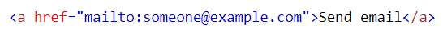

Link, Image, Iframe
Link
Syntax dan Hyperlink
HTML menggunakan link yang bersifat Hyperlink. Ketika di klik, link tersebut dapat mengarahkan pengguna ke webpage lain, atau bagian tertentu dalam homepage yang sedang dibaca.
Dalam HTML, tag yang digunakan adalah <a>.
URL Relatif dan Absolute
Terdapat 2 jenis link yang biasa digunakan dalam pembuatan website HTML, yaitu relatif dan absolute. Relatif adalah cara untuk membuat link ke suatu halaman dalam website yang sama. Sementara absolute adalah cara untuk membuat link ke suatu halaman dalam website berbeda.
 |
Untuk URL Relative, link tersebut tidak terbatas hanya membuat link ke page berbeda dan website sama, namun dengan menggunakan attribute 'id', kita dapat membuat link yang dapat mengarahkan ke section tertentu yang ingin ditautkan.
Link mailto:
Link yang disematkan dalam HTML juga dapat digunakan untuk mengarahkan pengguna untuk mengirim email dari akun email pengguna.
|  |
Image
Syntax Tag <img>
Tag <img> adalah tag yang digunakan untuk memasukan gambar ke dalam webpage. Dalam HTML, gambar yang dimasukkan bukanlah file gambar itu sendiri, melainkan sebuah link yang menyambungkan halaman webpage yang disematkan tag <img> menuju webpage yang berisi gambar yang diinginkan.
Contoh File Path
Dalam penggunaan tag <img>, penting untuk diingat pencantuman file path gambar dalam attribute 'src' yang sesuai agar HTML dapat menarik gambar yang sesuai dengan keinginan programmer. Berikut adalah beberapa tata cara pencantuman link file path yang benar:
Iframe
Syntax Iframe
Iframe (disebut juga sebagai inline frame) digunakan untuk menyisipkan webpage ke dalam suatu webpage dengan cara menggunakan tag <iframe>.
Mengatur Height dan Width dari Iframe
Salah satu atribut dari Iframe yang dapat diatur adalah height dan width dari iframe itu sendiri. Atribut ini dapat ditambahkan secara inline maupun internal/external CSS.
| Inline | CSS |
Pengaturan Border pada Iframe
Seperti beberapa object HTML lainnya, Iframe juga memiliki border yang dapat diatur sedemikian rupa sesuai dengan keinginan programmer.
| Menghilangkan border pada Iframe | Mengubah penampilan/style pada border |